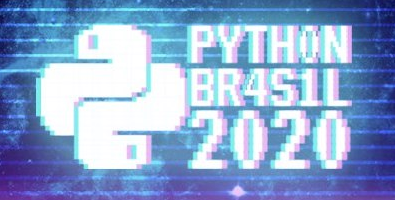

Criando Simetrias Pythônicas
Bernardo Fontes
05 de Novembro de 2020
Olar!
Visitem Recife!

Visitem Olinda!
Casa em Olinda com detalhes de cobogós e azulejosHoje vamos falar de azulejos
Detalhes de parede externa de uma casa em OlindaMódulos
Padrão
Vamos experimentar
Eis nosso módulo
Alguns padrões
Ref. Matemática dos AzulejosVamos experimentar
Padrão mais complexo
Casa em Furadouro, PortugalObtendo Padrões
Translação
Repetição do mesmo módulo paralelamente a si próprioObtendo Padrões
Alternância
 Alternância de módulos ou cores de um mesmo módulo (referência)
Alternância de módulos ou cores de um mesmo módulo (referência)
Obtendo Padrões
Rotação
Organização dos módulos com um movimento giratório em torno de um eixoObtendo Padrões
Simetria
Módulos espelhados a partir de um eixo imaginário (referência)Nosso módulo
pyp5js

Colabore com o projeto no Github
Noite de Processing
Noites de Processing toda última 3ª do mês